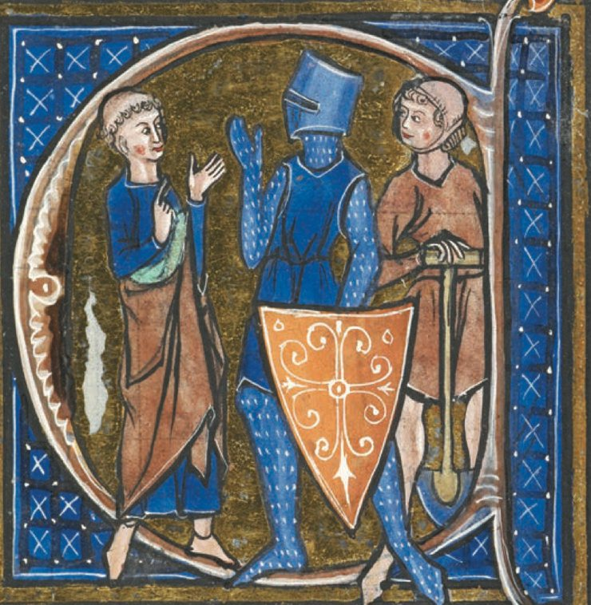
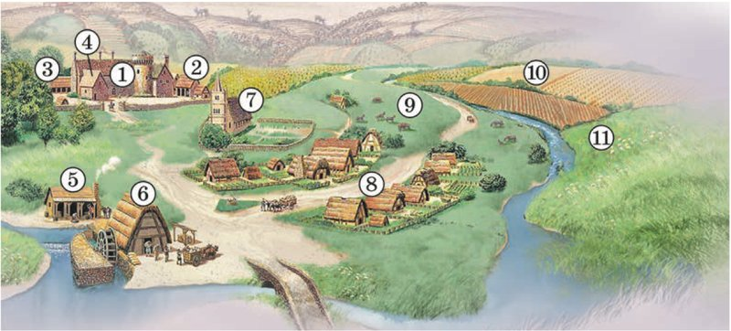
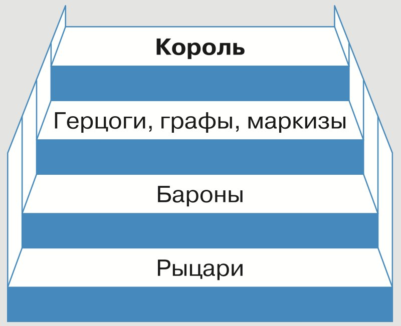
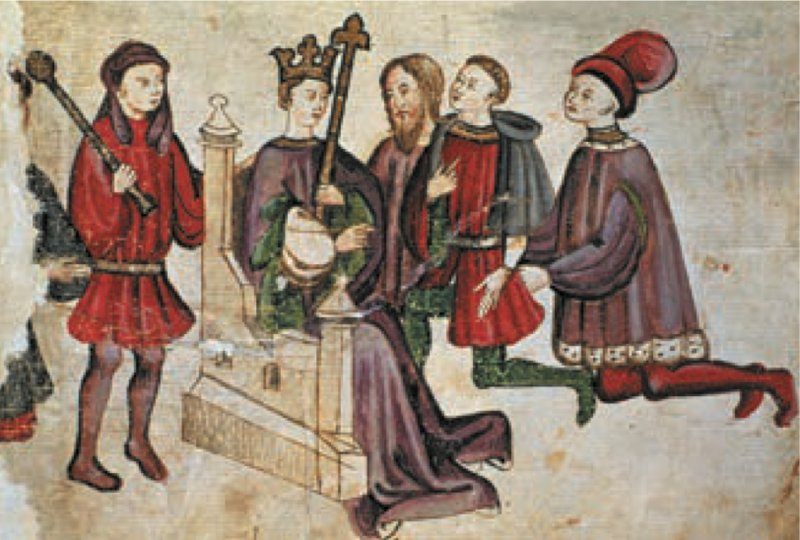
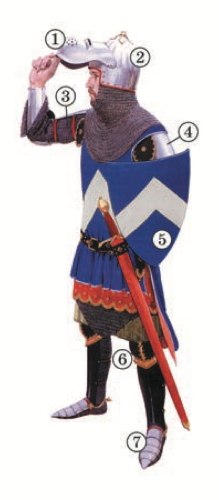
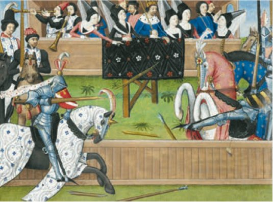
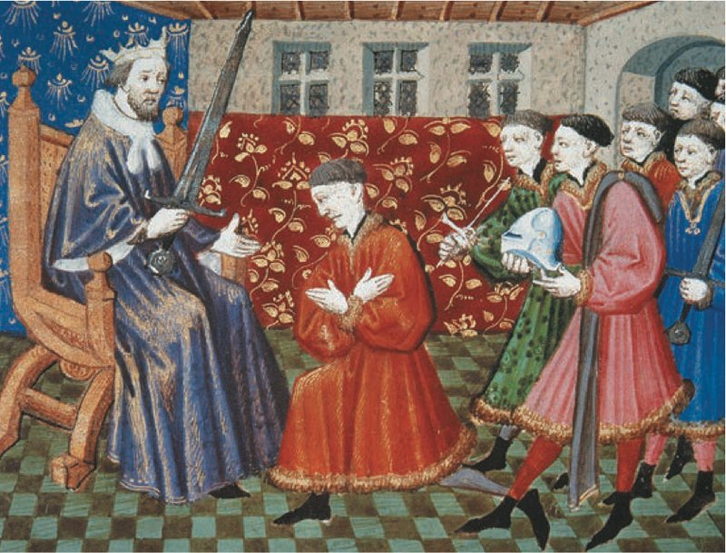
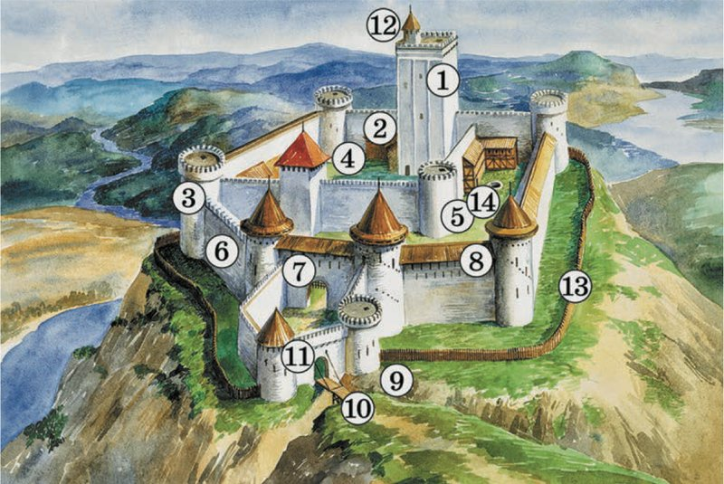
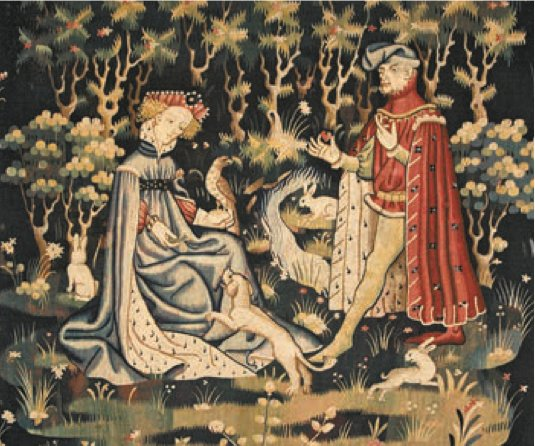

Сеньоры и вассалы
Амина, это история о том, как в Европе землю стали давать в награду за защиту, а воин на коне стал самым важным человеком.
Представь деревню у реки тысячу лет назад. Ни полиции, ни армии рядом нет. В любой день могут приплыть грабители на кораблях или прискакать чужие всадники. Что делать крестьянину, у которого в руках только лопата?
Идти к соседу, у которого есть конь, меч и крепкий дом: «Защити нас!» Сосед согласится, но скажет: «Тогда работайте на моём поле и отдавайте мне часть урожая». Так крестьянин становится зависимым, а сосед — его господином, сеньором.
Но и у этого сеньора есть господин повыше. Тот дал ему землю, а за это сеньор должен приезжать к нему на войну со своим отрядом. Кто получил землю за службу, тот вассал. Выходит целая лестница: каждый служит тому, кто стоит выше, и получает за это землю.
Главный вопрос параграфа: почему к концу раннего Средневековья в Европе распространились феоды и вассальные отношения? Держи в голове деревню у реки. Вот четыре главные части темы:
У каждого шага написано, на какой странице учебника искать. Внизу шага есть «Подробнее, как в учебнике»: там всё, что есть на этих страницах, ничего не пропущено. Сначала учи по коротким шагам, а перед уроком открой «подробнее».
Надпись вверху шага подскажет, откуда он: синяя — из учебника, золотая — задание учебника, оранжевая — сверх учебника (пересказ, словарик, игры, самопроверка). В «Содержании» шаги так же разбиты на группы.
Подробнее, как в учебнике · с. 74
- Главный вопрос параграфа: почему к концу раннего Средневековья в Европе распространились феоды и вассальные отношения?
- Слова параграфа: барщина, вассал, натуральное хозяйство, оброк, повинности, рыцарь, сеньор, сословие, феодализм. Все они есть в словарике (шаги 15–16).
- Иллюстрация в начале параграфа: «Церемония посвящения в рыцари». Миниатюра, XV век. Картинка и подпись к ней — на шаге 12, к ней вопрос 1 в конце параграфа.
- § 7 — первый параграф главы III «Средневековое европейское общество». Начало главы (с. 73) — на следующем шаге. Итоги главы будут в конце § 9.
- Таблицы дат «Мир / Россия» в § 7 нет. Даты, которые встречаются в тексте, собраны на шаге 3.
Средневековое европейское общество
С этого параграфа начинается новая глава учебника — глава III «Средневековое европейское общество». Она про то, как жили разные группы людей в Европе: воины, крестьяне, горожане, священники.
Открывает главу миниатюра «Три сословия». Попробуй угадать, кто из этих троих молится, кто сражается, а кто трудится. Подсказка — в том, что у них в руках и во что они одеты.

Рядом в учебнике слова епископа Адальберона Ланского. Он сравнил общество с домом Божьим, разделённым на три части: одни молятся, другие сражаются, третьи работают. Части не мешают друг другу: каждая помогает двум другим трудиться, и все вместе заботятся о целом. Поэтому дом стоит крепко, законы соблюдаются, а люди живут в мире.
Трудные слова в эпиграфе
- Эпиграф — короткие слова в начале главы, которые подсказывают, о чём она.
- Тройственное сочленение — соединение трёх частей в одно целое, как суставы соединяют кости.
- Раздельность — то, что части отделены друг от друга.
- Закон может торжествовать — законы соблюдаются, побеждает порядок.
- Вкушать мир — жить в мире, спокойно.
Почему исполнение обязанностей каждым из сословий было важно для всего средневекового общества?
Ответ ты будешь собирать постепенно, до конца главы — до § 9. Пока просто держи этот вопрос в голове.
Подробнее, как в учебнике · с. 73
- С. 73 — начало главы III «Средневековое европейское общество».
- Иллюстрация: «Три сословия». Миниатюра, XIII век. Подпись: средневековое общество в Западной Европе делилось на три разряда: «те, кто молится», «те, кто сражается» и «те, кто трудится». Считалось, что общество может существовать только при гармоничном взаимодействии всех сословий.
- Эпиграф: «Так дом Божий, единым почитаемый, разделён на три части: одни молятся, другие сражаются, третьи работают. Три соседствующие части не страдают от своей раздельности: услуги, оказываемые одной из них, служат условием для трудов двух других; в свою очередь каждая часть берёт на себя заботу о целом. Так это тройственное сочленение остаётся единым, благодаря чему закон может торжествовать, а люди — вкушать мир». Епископ Адальберон Ланский.
- Главный вопрос главы: почему исполнение обязанностей каждым из сословий было важно для всего средневекового общества?
Лента времени
В § 7 нет таблицы дат, как в прошлых параграфах. Здесь собраны даты и века, которые встречаются в самом тексте и в подписях к картинкам, сверху вниз от ранних к поздним. Нажми на дату, чтобы прочитать, что случилось. Справа — страница учебника.
Век в подписи к миниатюре — это когда её нарисовали.
Подробнее, как в учебнике · все даты § 7 по страницам
- Около 1000 г. — во всей Европе населения было меньше, чем сейчас в Италии или Франции (с. 74–75).
- К XI в. — главной ценностью по-прежнему была земля; сложилось новое устройство общества (с. 74–75).
- VIII–XI вв. — набеги норманнов, арабов и венгров (с. 75).
- VIII–X вв. — государи создают конное войско (с. 75).
- К XII в. — свободной земли и свободных крестьян в Западной Европе почти не осталось (с. 77).
- XIV в. — появился сплошной доспех весом до 30 кг (с. 79).
- 1340 г. — послание Жана де Валленкура с отказом от вассальной клятвы (с. 83).
- Даты в подписях к иллюстрациям: миниатюра «Три сословия», XIII в. (с. 73); «Церемония посвящения в рыцари», XV в. (с. 74); «Санчо IV Кастильский принимает вассальную присягу», XIII в. (с. 79); «Рыцарь в доспехах», середина XIV в. (с. 79); «Рыцарский турнир», XV в. (с. 80); «Книга о рыцарском ордене» Рамона Льюля, XIII в. (с. 80); «Рыцарский замок XII в.» (с. 81); «Рыцарь предлагает даме своё сердце», ковёр, XIV в. (с. 82).
1Земля с людьми и защита
К XI веку главным богатством в Европе, как и раньше, была земля: она кормила людей. Но пашни, сады и огороды дают урожай, только когда на них работают. Поэтому ценилась не просто земля, а земля с людьми. А людей не хватало.
Около 1000 года во всей Европе жило меньше людей, чем сейчас в одной Италии или Франции. Путешественник мог ехать целый день и не встретить ни одного человека.
Земледельцам постоянно грозила опасность, и они искали защиты. Защитить могли только те, у кого было оружие и кто умел им владеть. После Великого переселения народов это были германские короли и их дружинники (ты помнишь их по § 1). Их власть постепенно росла.
Простые германцы, которые поселились на землях Западной Римской империи, ещё долго были свободными и полноправными: они и пахали землю, и воевали. Но рядом с их небольшими участками росли большие владения короля и дружинников. На этих владениях работали жители завоёванных земель.
Как свободный становился зависимым
Неравенство росло. Знатные люди нередко силой отбирали у обедневших соседей землю и свободу. А с VIII по XI век на Европу нападали норманны, арабы и венгры. Чтобы спастись, простой земледелец переходил под защиту могущественного соседа.
Так он становился зависимым крестьянином. А его богатый покровитель становился его сеньором (по-латыни — «старший»), то есть господином. Сеньорами могли быть светские лица (то есть не священники), епископы и монастыри.
Подробнее, как в учебнике · с. 74–75, п. 1
- Пункт 1 «Новое устройство общества». К XI в. в Европе главной ценностью, дающей средства к существованию, по-прежнему была земля. Но пашни, сады и огороды приносят урожай, когда на них работают. Поэтому ценилась не просто земля, а земля с людьми, которых не хватало. Около 1000 г. во всей Европе населения было меньше, чем сейчас в Италии или Франции. Путешественник мог пробыть в дороге целый день, не встретив ни единого человека.
- В раннее Средневековье постоянная внешняя опасность заставляла земледельцев искать себе защиту. Предоставить её могли только те, кто имел оружие и умел им владеть. После Великого переселения народов такими людьми были германские короли и дружинники, власть которых постепенно усиливалась. Простые германцы, осевшие на территории Западной Римской империи, ещё долго оставались свободными и полноправными людьми, земледельцами и одновременно воинами. Но рядом с их небольшими земельными участками росли крупные владения короля и его дружинников с работавшими на них жителями завоёванных земель.
- Возрастающее неравенство изменило отношения между соплеменниками. Знатные люди нередко силой отбирали землю и свободу у обедневших соседей. В то же время простые земледельцы нуждались в помощи против продолжавшихся с VIII по XI в. набегов норманнов, арабов и венгров. Переходя под защиту могущественного соседа, они теряли свободу и права на землю, попадали в зависимость от богатого покровителя, т. е. становились зависимыми крестьянами. Теперь они должны были работать на него и отдавать ему часть урожая, а тот становился их сеньором (по-латыни — старший), т. е. господином. Сеньорами могли быть светские лица, епископы, монастыри.
1Воины на конях и три сословия
Зависимых крестьян становилось больше и из-за королевской власти. Уже в VIII–X веках из-за военной опасности государям нужно было хорошо вооружённое и обученное конное войско, которое могло бы отбивать нападения. Пешее ополчение для этого не годилось.
Крестьяне больше не были обязаны воевать и теряли право носить оружие. А раньше оружие было признаком свободного человека. Защищать население и ходить в набеги на соседей стали воины.
Но боевой конь и хорошее вооружение стоили очень дорого. Чтобы их купить и содержать, воину нужно было много земли с крестьянами. Так к XI веку в Западной Европе сложилось новое устройство общества: профессиональные воины отделились от земледельцев и стали им противопоставлены.
Что такое ополчение и «противопоставлены»?
Ополчение — войско из простых людей, которых собирают на время войны. Они идут воевать пешком и с тем оружием, какое есть. Профессиональный воин — тот, для кого война и есть работа: он всё время тренируется и воюет на коне.
Противопоставлены — стоят по разные стороны: у воинов одна жизнь и одни заботы, у земледельцев — другие.
Три сословия
Люди того времени по-разному представляли себе общество. Одни делили его на богатых и бедных или на сильных и слабых, другие находили в нём много разных групп.
Шли постоянные войны и ссоры, и Церковь предложила своё деление, чтобы примирить людей. Она учила, что Бог разделил общество на три сословия: молящихся, воюющих и работающих. У каждого сословия свои задачи. Вспомни миниатюру «Три сословия» из шага 2.
Общество часто сравнивали с телом человека:
Этим сравнением хотели сказать: сословия не равны, но каждое необходимо, и все зависят друг от друга. Тело не проживёт ни без сердца, ни без рук, ни без ног.
Подробнее, как в учебнике · с. 75–76, п. 1
- Распространению зависимости крестьян способствовала и королевская власть. Уже в VIII–X вв. военная опасность заставляла государей создавать хорошо вооружённое и обученное конное войско, которое могло бы успешно отражать нападения. Пешее ополчение для этого не годилось. Не обязанные воевать, крестьяне утрачивали право носить оружие, прежде неотделимое от их свободы.
- Защита населения и набеги на соседей стали занятием воинов, но боевой конь и хорошее вооружение стоили очень дорого. Чтобы их приобрести и содержать, воин должен был иметь во владении много земли с крестьянами. Так к XI в. в Западной Европе сложилось новое устройство общества, в котором профессиональные воины были отделены от земледельцев и противопоставлены им.
- Люди тогда по-разному представляли себе, как устроено общество. Некоторые делили его на богатых и бедных или на могущественных и слабых, другие выделяли в нём множество групп. В условиях постоянных войн и конфликтов Церковь предложила своё деление, призванное примирить противоречия. Она утверждала, что Бог разделил общество на три сословия: молящихся, воюющих и работающих. Перед каждым из них стояли свои задачи.
- Общество часто сравнивали с телом человека, уподобляя молящихся сердцу, воюющих рукам, а работающих ногам. Тем самым подчёркивалось, что все сословия хотя и не равны, но каждое необходимо и все зависят друг от друга.
- Вопросы учебника после пункта 1: что считалось в Средние века главной ценностью? Почему? Как внешняя опасность влияла на развитие общества? Как люди Средневековья представляли себе устройство общества?
2Крестьянин на земле сеньора
Крестьянин потерял свободу, и земля, на которой он жил и работал, была не его: вся она принадлежала сеньорам. Но у крестьян были орудия труда, рабочие руки и умения. Без их труда земля для сеньора ничего не стоила.
Владения сеньора называют поместьем, или сеньорией. Обычно поместье делилось на две части:
Земля господина
Леса для охоты, луга для его коней, пашни и огороды, с которых продукты шли на его стол. Весь урожай с господских садов и полей — сеньору.
Наделы крестьян
Участки земли, на которых крестьяне работали для себя. За пользование ими крестьяне несли повинности.

Подсказка к заданию у рисунка
Представь, что ты идёшь по дороге через мостик и рассказываешь, что видишь вокруг. Начни с холма, где живёт сеньор, потом спустись к деревне и к реке. Для каждого места подумай: кому оно нужно — сеньору, крестьянам или всем вместе? Челядь — слуги в доме господина.
Повинности
За пользование землёй сеньора крестьяне несли повинности — обязанности в пользу сеньора:
- барщина — работали на господском поле;
- оброк — платили продуктами или деньгами;
- были и другие повинности.
Судил крестьян, как правило, тоже сеньор.
Подробнее, как в учебнике · с. 76–77, п. 2
- Пункт 2 «Крестьянин на земле сеньора». Положение крестьян в средневековом обществе было связано с утратой свободы и с тем, что земля, на которой они жили и работали, не являлась их собственностью, вся она принадлежала сеньорам. В то же время у крестьян были орудия труда, рабочие руки и навыки, без их труда земля для сеньора не имела ценности.
- Владения сеньора — их называют поместьем, или сеньорией, — обычно делились на две части. Одну господин оставлял себе: леса для охоты, луга, где паслись его кони, пашни и огороды, поставлявшие продукты на его стол. Весь урожай, собранный в господских садах и на полях, принадлежал сеньору.
- Рисунок на с. 76: «Поместье (сеньория)». Реконструкция: 1 — замок сеньора; 2 — конюшня; 3 — склады и амбары; 4 — дом для челяди; 5 — кузница; 6 — водяная мельница; 7 — церковь и кладбище; 8 — деревня с крестьянскими домами и приусадебными хозяйствами; 9 — общее пастбище; 10 — пахотные наделы; 11 — луг. Задание: изучите рисунок. Составьте рассказ о том, как было устроено поместье.
- Другая часть земли делилась на наделы, которые передавались крестьянам. За пользование землёй сеньора крестьяне несли повинности в его пользу: работали на господском поле (барщина), платили оброк продуктами или деньгами, были и другие повинности. Судил крестьян, как правило, тоже сеньор.
2Разная зависимость и натуральное хозяйство
К XII веку в Западной Европе почти не осталось свободной земли и свободных крестьян. Но несвободны крестьяне были по-разному. Одни несли небольшие повинности. Другие подолгу работали на барщине или отдавали сеньору половину урожая.
Тяжелее всех было лично зависимым крестьянам. Они несли повинности и за землю, и за самих себя. Нередко они даже жениться не могли без согласия сеньора.
Повинности часто были тяжёлыми, но подолгу не менялись, и к ним привыкали. А если сеньоры пытались их увеличить и нарушали давние обычаи, крестьяне сопротивлялись: искали справедливости в суде короля или восставали.
Всё своё, всё на месте
Крестьяне кормили и себя, и своего сеньора с его людьми, и ближайшие города. Всё, что нужно для жизни каждый день, делали в каждой деревне. Покупали редко, да и деньги взять было негде.
Когда всё необходимое не покупают, а производят на месте, это называется натуральным хозяйством. В раннее Средневековье оно господствовало, то есть было главным.
Представь, что твоя семья сама растит хлеб и овощи, держит корову и овец, прядёт шерсть, шьёт одежду, а на рынок ездит раз в год — за солью.
Но кое-что всё же приходилось покупать или выменивать, например соль или железо. А сеньорам нужны были хорошее оружие и породистые кони, их обычно привозили издалека. Так что даже при натуральном хозяйстве обмен и торговля полностью не прекращались.
Подробнее, как в учебнике · с. 77, п. 2
- Свободной земли и свободных крестьян к XII в. в Западной Европе почти не осталось. Однако все они были несвободны по-разному. Одни несли небольшие повинности, а другие подолгу работали на барщине или отдавали сеньору половину урожая. Самым тяжёлым было положение лично зависимых крестьян. Они несли повинности и за землю, и за себя лично. Нередко без согласия сеньора они даже не могли жениться.
- Крестьянские повинности часто были тяжёлыми, но, так как они подолгу не менялись, к ним привыкали. И если сеньоры пытались увеличить их, нарушая давние обычаи, то крестьяне сопротивлялись, искали справедливости в суде короля или восставали.
- Крестьяне обеспечивали продовольствием и себя, и своего сеньора с его людьми, и ближайшие к ним города. То, в чём люди нуждались для повседневной жизни, производилось в каждой деревне. Покупки делались редко, да и деньги на них взять было негде.
- Такое положение, когда всё необходимое не покупается, а производится на месте, называется натуральным хозяйством. В раннее Средневековье оно господствовало, но кое-что всё же приходилось покупать или выменивать, например соль или железо. Да и сеньоры нуждались в хорошем оружии и в породистых конях; всё это обычно привозилось издалека. Так что даже при натуральном хозяйстве обмен и торговля полностью не прекращались.
- Вопросы учебника после пункта 2: какие повинности несли крестьяне в пользу сеньора? Почему это происходило? Что такое натуральное хозяйство?
3Феоды и феодальная лестница
Войны шли часто, и главную роль в обществе играли воюющие. Только они могли защитить от врагов главную ценность — землю, а земля давала хозяину богатство и власть. На этом строились и отношения внутри сословия воюющих. Главное в них — земельные владения, феоды.
Высшим сеньором был король. Своим приближённым — герцогам, графам, маркизам — он давал большие феоды. Землю они получали с условием: нести военную службу, лично являться на неё и приводить большие отряды хорошо вооружённых конных воинов.
Чтобы собрать такой отряд, каждому из них приходилось делить свой феод на части и раздавать своим людям — тоже с условием военной службы. Так доходило до самой нижней ступеньки. На ней стояли простые конные воины: их земли хватало только на своего коня и оружие.
Тот, кто давал землю, назывался сеньором, а тот, кто получил от него феод, — вассалом. Один и тот же воин-землевладелец мог быть сразу и вассалом (для того, кто выше), и сеньором (для тех, кто ниже). Всё вместе напоминало лестницу, её так и называют — феодальная лестница.

Подсказка к заданию у схемы
Возьми три ступеньки подряд: король, граф, барон. Король дал землю графу, граф — барону. Кто чей вассал? А теперь медленно прочитай правило, подставляя вместо слов «мой» и «моего» короля и графа. Кому тогда служит барон?
А кто такие бароны?
На схеме между герцогами, графами, маркизами и рыцарями стоят бароны. В тексте учебника про них не рассказано. Бароны — тоже знатные сеньоры, но пониже рангом, чем герцоги и графы.
В Англии и Германии все феодалы должны были в какой-то мере подчиняться королю. А во Франции действовало правило: «Вассал моего вассала — не мой вассал». Крестьяне в эту лестницу не входили, потому что не несли военной службы.
О Средних веках говорят, используя слово феодализм. Его важная черта — землёй владели с условием: свои права на одну и ту же землю были и у сеньоров, и у вассалов, и у крестьян, у каждого свои. Сегодня учёные-историки много спорят о понятии «феодализм».
Подробнее, как в учебнике · с. 77–78, п. 3
- Пункт 3 «Сеньоры и вассалы». В условиях частых войн ведущая роль в обществе принадлежала воюющим. Именно они могли защитить от внешней опасности главную ценность — землю, которая давала её владельцам богатство и власть. Вокруг этого строились и отношения внутри сословия воюющих. Главную роль в них играли земельные владения — феоды.
- Высшим сеньором был король. Своим приближённым — герцогам, графам, маркизам — он передавал во владение большие феоды. Они получали земли при условии несения военной службы и лично являлись на неё, приводя с собой большие отряды хорошо вооружённых конных воинов. Но, чтобы собрать такой отряд, каждому из них приходилось делить феод на части и раздавать их своим людям, тоже на условии несения военной службы. Так дело доходило до самой нижней ступеньки, которую занимали простые конные воины — их земельных владений хватало лишь на собственного коня и оружие.
- Тот, кто наделял землёй, именовался сеньором, а получивший от него феод — вассалом. Система, в которой воин-землевладелец, занимая свою ступеньку, мог быть одновременно и вассалом, и сеньором, напоминала лестницу; её и называют феодальной лестницей. Отношения между сеньорами и вассалами не везде были одинаковыми. В Англии и Германии все феодалы обязаны были в какой-то мере подчиняться королю. Во Франции же действовало правило: «Вассал моего вассала — не мой вассал». Вне этой системы находились крестьяне, поскольку они не несли военной службы.
- Подробнее. Говоря о Средних веках, используют термин феодализм. Его важной чертой был условный характер владения землёй: определённые права на неё были и у сеньоров, и у вассалов, и у крестьян, но у каждого — свои. Сегодня в исторической науке понятие «феодализм» вызывает немало споров.
- Схема на с. 78 «Феодальная лестница»: король; ниже — герцоги, графы, маркизы; ниже — бароны; внизу — рыцари. Задание: рассмотрите схему и расскажите, что означает правило «Вассал моего вассала — не мой вассал».
3Кто кому что должен
Вассал
Нести конную военную службу — обычно 40 дней в году. Помогать сеньору советом и деньгами, например чтобы выкупить сеньора из плена.
Сеньор
Защищать вассала. Не отбирать у него феод без веской причины.
Ссоры между сеньорами и вассалами случались часто. Но отобрать феод у вассала было непросто: такие дела решал суд из равных ему вассалов того же сеньора.

Подсказка к заданию у миниатюры
Присяга — торжественное обещание служить. Посмотри на позы: кто сидит, кто стоит, кто на коленях? У кого знаки власти — корона и скипетр? Подумай, кто здесь даёт обещание, а кто его принимает, и что каждый из них получает от этого обещания.
В идеале храбрые вассалы верно служили справедливому сеньору, а он щедро их награждал. Но так бывало далеко не всегда. Случалось, что сеньор притеснял вассала, а вассал выступал против сеньора.
К тому же часто вассал получал не один, а два феода или больше от разных сеньоров. Тогда отношения сильно запутывались: трудно было понять, кому вассал должен служить в первую очередь.
А почему это запутывало?
Представь, что ты ходишь в две секции, и тренеры обеих назначили соревнования на один и тот же день. Куда идти? Вот и у вассала двух сеньоров было двое тех, кому он обещал служить.
Подробнее, как в учебнике · с. 78–79, п. 3
- Обязанности вассала состояли в военной конной службе, обычно ограниченной сроком в 40 дней в году, и в помощи сеньору советом и деньгами (например для выкупа сеньора из плена). Сеньор же должен был защищать вассала и не лишать его феода без веской причины. Конфликты между сеньорами и вассалами были обычным делом, но отобрать феод у вассала было сложно: такие вопросы решал суд равных ему вассалов того же сеньора.
- Иллюстрация на с. 79: «Санчо IV Кастильский принимает вассальную присягу». Миниатюра, XIII век. Задание: опишите церемонию, представленную на иллюстрации. Предположите, какое значение она имела для её участников. Кто из них является сеньором, а кто вассалом? Почему?
- В идеале храбрые вассалы верно служили справедливому сеньору, который щедро их вознаграждал. Однако так бывало далеко не всегда. Случалось, что сеньор притеснял вассала, а тот выступал против сеньора. К тому же часто вассал получал не один, а два или более феода от разных сеньоров. Тогда отношения между ними сильно запутывались. Было трудно понять, кому вассал должен служить в первую очередь.
- Вопросы учебника после пункта 3: кого называли сеньорами и вассалами? Какие взаимные обязанности у них были? Почему между сеньорами и вассалами порой возникали конфликты?
4Рыцарь на войне
Сеньоров и вассалов объединяло одно: все они были рыцарями или хотели ими стать. Русское слово «рыцарь» пришло от немецкого «риттер» — всадник. Рыцарем обычно становился знатный человек, достаточно богатый, чтобы иметь боевого коня и вооружение.
Несколько веков рыцари господствовали на полях сражений. В бою рыцари почти не рисковали жизнью: их противники, такие же рыцари, обычно старались не убить их, а взять в плен, чтобы получить выкуп.
Воинские обязанности требовали от рыцаря храбрости, физической силы и постоянных тренировок.

Рыцарь был прекрасно подготовлен к войне. Его защищали кольчуга, щит и шлем. В XIV веке появился сплошной доспех весом до 30 кг. Нападал рыцарь мечом и длинным копьём. Когда рыцари в доспехах мчались на конях по полю боя, казалось, что такой удар не выдержит никакая сила.
Трудные слова про доспехи
- Защитное вооружение — то, что бережёт самого воина: кольчуга, шлем, щит, доспех. Наступательное оружие — то, чем бьют противника: меч, копьё.
- Кольчуга — рубаха, сплетённая из маленьких железных колец.
- Латы — доспех из цельных железных пластин.
- Забрало — часть шлема, которая закрывает лицо. На рисунке рыцарь его поднял.
Подробнее, как в учебнике · с. 79, п. 4
- Пункт 4 «Рыцарь на войне». Сеньоров и вассалов объединяло то, что все они были или стремились стать рыцарями. Слово «рыцарь» в русском языке происходит от немецкого «риттер» — всадник. Рыцарем обычно становился человек знатный и достаточно состоятельный, чтобы иметь боевого коня и вооружение.
- Несколько веков рыцари господствовали на полях сражений. В бою рыцари фактически не рисковали жизнью, ведь обычно их противники — такие же рыцари — стремились не убивать их, а брать в плен, чтобы получить выкуп. Воинские обязанности требовали от рыцаря храбрости, физической силы и постоянной тренировки.
- Рисунок на с. 79: «Рыцарь в доспехах, сер. XIV в.». Реконструкция: 1 — забрало; 2 — шлем; 3 — кольчуга; 4 — латы; 5 — щит; 6 — наколенник; 7 — латный башмак. Подпись: рыцарь был прекрасно подготовлен к войне. Его защитное вооружение составляли кольчуга, щит и шлем. В XIV в. появился сплошной доспех весом до 30 кг. Наступательным оружием были меч и длинное копьё. Когда защищённые доспехами рыцари на конях мчались по полю боя — казалось, нет силы, способной выдержать такой удар.
4Турниры, гербы и что нужно рыцарю
В мирное время рыцари занимались тем, что похоже на войну: охотились на кабанов или оленей, участвовали в турнирах — состязаниях в умении владеть оружием. Чтобы несчастных случаев было как можно меньше, на турнирах обычно сражались затупленным оружием и в особых доспехах.

Подсказка к заданию у миниатюры
Для первого вопроса вспомни рисунок «Рыцарь в доспехах» из прошлого шага и найди те же детали у всадников. Что у них в руках? Для второго посмотри наверх, на трибуну: во что одеты эти люди и что у некоторых в руках?
Турниры устраивали герольды. Взглянув на рыцаря, они сразу понимали, кто он: на щите был знак рода — герб. Позже гербы появились у городов и у духовных лиц (священников), а из гербов правителей выросли гербы государств. На гербе помещали девиз владельца — короткое изречение.
Гербы есть и сегодня: у России это золотой двуглавый орёл на красном щите. Свои гербы есть у Дагестана и у многих городов.
Из «Книги о рыцарском ордене» Рамона Льюля (XIII в.)
«Иметь коня, доспехи и быть господином ещё недостаточно для того, чтобы претендовать на высокую честь принадлежности к рыцарству, ибо рыцарь нуждается также в оруженосце и паже, которые заботились бы о нём и о его конях. Необходимо также, чтобы кто-то пахал, перекапывал землю и выпалывал сорняки, чтобы давала она плоды, которыми питаются рыцарь и его кони; следует ему также ездить верхом и вести жизнь сеньора».
Задание учебника: что, по мнению автора документа, необходимо иметь для того, чтобы быть рыцарем?
Подсказка к заданию и трудные слова
Перечитай отрывок и выпиши всё, что, по словам автора, нужно рыцарю: сначала вещи, потом люди, которые о нём заботятся, потом те, кто его кормит, и в конце — какую жизнь он должен вести.
Претендовать — считать, что имеешь право на что-то. Ибо — потому что. Паж и оруженосец — юные помощники рыцаря, о них следующий шаг.
Подробнее, как в учебнике · с. 80, п. 4
- В мирное время рыцари заполняли досуг занятиями, похожими на войну: охотились на кабанов или оленей, участвовали в турнирах — состязаниях в умении владеть оружием. Чтобы свести к минимуму несчастные случаи на турнирах, рыцари обычно сражались затупленным оружием и в особых доспехах.
- Организацией турниров занимались герольды. Едва взглянув на рыцаря, они могли определить, кто он такой: ведь на щите был знак рода — герб. Позже гербы появились у городов и духовных лиц, а из гербов правителей возникали гербы государств. На гербе был помещён девиз его обладателя — краткое изречение.
- Иллюстрация на с. 80: «Рыцарский турнир». Миниатюра, XV век. Задание: назовите детали вооружения рыцарей. Кто, помимо рыцарей, присутствовал на турнире?
- «Свидетельство эпохи»: отрывок из «Книги о рыцарском ордене» Рамона Льюля (XIII в.) — полностью приведён выше. Задание: что, по мнению автора документа, необходимо иметь для того, чтобы быть рыцарем?
- «Любопытные детали» и вопросы после пункта 4 (тоже на с. 80) — на следующем шаге.
4Как становились рыцарями
С 7 лет мальчики из знатных семей вассалов служили пажами при дворах сеньоров. Их учили ездить верхом, владеть оружием, охотиться, петь, танцевать, и они перенимали изысканные придворные манеры.
Потом юноша становился оруженосцем рыцаря: прислуживал ему и помогал в сражении. Но даже после такой подготовки рыцарем можно было стать только после особой церемонии — посвящения. Этот обряд был похож на монашеский.
А ещё именно Церковь приучала рыцарей с их грубыми военными нравами к мысли, что рыцарь должен служить, защищать бедных и так далее.

Церемония посвящения в рыцари называлась акколадой (от латинского «объятия»). Она пришла от обычая германцев торжественно вручать оружие молодому воину: с этой минуты его считали совершеннолетним. Со временем у церемонии сложился свой постоянный порядок.
Главное в обряде — опоясывание мечом. Потом посвящающий обнимал нового рыцаря и давал ему пощёчину. Пощёчина означала единственный удар, на который новый рыцарь должен был не отвечать.
Подробнее, как в учебнике · с. 80 и 74, п. 4
- Любопытные детали (с. 80). С 7 лет мальчики из знатных семей вассалов служили пажами при дворах сеньоров. Их учили ездить верхом, владеть оружием, охотиться, петь, танцевать; они усваивали изысканные придворные манеры. Затем юноша становился оруженосцем рыцаря: прислуживал, помогал в сражении. Но даже пройдя такую подготовку, он мог стать рыцарем только в результате особой церемонии посвящения. Этот ритуал сродни монашескому. Стоит также отметить, что именно Церковь внедряла в грубые военные нравы рыцарей идеи служения, защиты бедных и т. д.
- Иллюстрация в начале параграфа (с. 74): «Церемония посвящения в рыцари». Миниатюра, XV век. Подпись: церемония посвящения в рыцари называлась акколадой (от латинского «объятия»). Она восходит к обычаю германцев торжественно вручать оружие молодому воину, признаваемому с этого момента совершеннолетним. Со временем церемония приобрела классическую форму. Ключевым эпизодом ритуала являлось опоясывание мечом, за которым следовали объятия посвящающего и пощёчина как символ единственного удара, который новый рыцарь должен был оставить безответным.
- Вопросы учебника после пункта 4 (с. 80): каковы были преимущества рыцарского войска перед пешим ополчением? Почему рыцари чаще попадали в плен, чем погибали? Какие занятия считались достойными рыцаря?
5Рыцарский замок
Средневековье с его постоянными войнами лучше всего показывает неприступный каменный замок — дом рыцаря и одновременно его крепость.
Строители замков старались устроить для нападающих целую систему препятствий:
- ров, заполненный водой, с подъёмным мостом;
- одно или два кольца каменных стен с башнями;
- высокая главная башня — донжон.
Колодец и запасы еды позволяли выдержать долгую осаду. Захватить замок обычно удавалось только хитростью или с помощью предателей.

Подсказка к заданию у рисунка
«Где возводился»: посмотри, на каком месте стоит замок и что вокруг — легко ли к нему подобраться? «Как устроен»: пройди путь врага от подножия холма до донжона по номерам. Что ему встретится первым, что потом?
Бойницы — узкие окошки в стене для стрельбы. Палисад — забор из заострённых брёвен. Часовня — маленькая церковь. Осада — когда враги окружают крепость и ждут, пока у защитников кончатся еда и вода.
Замок был центром жизни всей округи. Здесь жил сеньор с семьёй, подолгу гостили вассалы и воспитывались их дети.
Подробнее, как в учебнике · с. 81, п. 5
- Пункт 5 «Рыцарские быт и культура». Воплощением Средневековья с его постоянными войнами стал неприступный каменный замок — жилище рыцаря и его крепость. Строители замков стремились создать для нападавших систему препятствий: заполненный водой ров с подъёмным мостом, одно или два кольца каменных стен с башнями, высокая главная башня — донжон. Колодец и запасы продовольствия позволяли выдержать долгую осаду. Захватить замок, как правило, удавалось лишь хитростью или с помощью предателей.
- Замок был центром жизни всей округи. Здесь жил сеньор с семьёй, подолгу гостили вассалы и воспитывались их дети.
- Рисунок на с. 81: «Рыцарский замок XII в.». Реконструкция: 1 — донжон; 2 — замковая часовня; 3 — башня; 4 — верхний двор; 5 — нижний двор с хозяйственными постройками и конюшней; 6 — каменные стены; 7 — бойницы; 8 — деревянные галереи; 9 — ров с водой; 10 — подъёмный мост; 11 — надвратная башня и железная решётка; 12 — сторожевая вышка; 13 — палисад; 14 — колодец. Задание: расскажите, где возводился и как был устроен рыцарский замок.
5Рыцарская культура
При дворах сеньоров расцвела рыцарская культура: замки и гербы, турниры и пиры, танцы и поэтические состязания.
Рыцарь подчинялся особым правилам поведения — кодексу рыцарской чести. Эти правила отличали его от всех остальных людей.
Но к простолюдинам рыцари этот кодекс не применяли. С ними они вели себя грубо и жестоко, часто грабили мирных жителей и не считали себя обязанными держать данное им слово.
Рыцарская культура требовала умения вести себя при дворе, особенно с дамами. Считалось, что рыцарь должен быть влюблён в образ Прекрасной дамы и прославлять её своими подвигами. Эта придворная игра смягчала грубые нравы.

Подсказка к заданию у ковра
Что делает рыцарь и как он одет? Вспомни, как рыцарь должен был вести себя с дамами и что такое Прекрасная дама. А кто сидит у дамы на руке? Какое занятие знатных людей эта птица напоминает?
Многие рыцари сочиняли стихи. Например, трубадуры — рыцари-поэты Южной Франции. При дворах звучали их песни и эпические поэмы о героях прошлого, такие как «Песнь о Роланде». Очень любили рыцарские романы о короле Артуре и рыцарях Круглого стола.
Рыцарские идеалы и ценности сильно повлияли на то, как потом развивалась культура Западной Европы.
К XI веку сложилось новое устройство общества и представление о том, что оно делится на три сословия — молящихся, воюющих и работающих. Крестьяне попали в зависимость от сеньоров. У воюющих утвердилась система вассальных отношений: передача феодов и выполнение определённых обязанностей. Возникло рыцарство.
Подробнее, как в учебнике · с. 81–82, п. 5 и «Подведём итоги»
- При дворах сеньоров расцвела рыцарская культура. Замки и гербы, турниры и пиры, танцы и поэтические состязания. Рыцарь подчинялся определённым правилам поведения (кодексу рыцарской чести), отличавшим его от всех остальных. Честь для рыцаря была выше жизни, а худшим пороком считалась трусость. Ему следовало быть храбрым в бою и верным сеньору, отстаивать христианскую веру, защищать слабых. Однако кодекс рыцарской чести не соблюдался по отношению к простолюдинам, с ними рыцари вели себя грубо и жестоко, часто грабили мирных жителей, не считали себя обязанными держать данное слово.
- Рыцарская культура требовала умения вести себя при дворе, особенно в общении с дамами. Считалось, что рыцарь должен быть влюблён в образ Прекрасной дамы и прославлять её своими подвигами. Эта придворная игра смягчала грубость нравов.
- Иллюстрация на с. 82: «Рыцарь предлагает даме своё сердце». Изображение на ковре, фрагмент, XIV век. Задание: какие черты рыцарской культуры отражает иллюстрация?
- Многие рыцари сочиняли стихи, как, например, трубадуры — рыцари-поэты Южной Франции. При дворах звучали их песни и эпические поэмы о героях былых времён, такие, как «Песнь о Роланде». Очень популярны были рыцарские романы о короле Артуре и рыцарях Круглого стола. Рыцарские идеалы и ценности оказали большое влияние на последующее развитие западноевропейской культуры.
- Вопрос учебника после пункта 5: как рыцарская культура связана с военными занятиями рыцарей?
- «Подведём итоги»: к XI в. сложилось новое устройство общества и оформились представления о его делении на три сословия — молящихся, воюющих и работающих. Крестьяне оказались в зависимости от сеньоров. В сословии воюющих утвердилась система вассальных отношений, основанная на передаче феодов и выполнении определённых обязанностей. Возникло рыцарство.
Словарик: общество и земля
ИграНажми на карточку, и она перевернётся. Словарик из двух частей, открой все карточки.
Словарик: крестьяне и рыцари
ИграВторая часть: повинности, хозяйство и жизнь рыцарей.
Слова с секретом
ИграУ каждого из этих слов есть перевод или разгадка. Нажми на слово слева, потом на его разгадку справа.
Кто что должен?
ИграВ средневековом обществе у каждого были свои обязанности. Прочитай карточку и выбери, чья это обязанность: крестьянина, вассала или сеньора.
Путь в рыцари
ИграКак мальчик из знатной семьи становился рыцарем? Нажимай на события по порядку, от первого к последнему.
Найди лишнее
ИграТри из одной компании, одно чужое. Найди чужое.
Проверь себя
Вопросы из учебника
Это вопросы и задания в конце параграфа, номера такие же, как в твоём учебнике. Рядом с каждым написано, на каком шаге искать ответ. Отвечай своими словами: так лучше запоминается, и учитель услышит, что ты поняла, а не заучила.
Рассмотрите иллюстрацию в начале параграфа. По каким деталям можно определить, представители какого сословия на ней изображены? Докажите, что на иллюстрации представлена церемония посвящения в рыцари.
Подсказка: картинка — на шаге 12. Посмотри на одежду, оружие и позы: кто сидит на троне, что у него в руках, кто стоит на коленях, что несут люди справа? Потом перечитай подпись про акколаду и найди на картинке то, что в ней описано.
Шаг 12 · Паж, оруженосец, рыцарь Шаг 10 · Рыцарь на войнеКак и почему крестьяне теряли землю и свободу? Охарактеризуйте положение зависимых от сеньора крестьян.
Подсказка: для первой части ищи, от кого крестьянам нужна была защита, кто отбирал у них землю и почему они перестали носить оружие (шаги 4–5). Для второй — чья была земля, какие повинности несли крестьяне, кто их судил, кому было тяжелее всех и что делали крестьяне, если повинности увеличивали (шаги 6–7).
Шаги 4–5 · Земля и защита Шаги 6–7 · КрестьянинПочему в средневековой Европе сложилось натуральное хозяйство?
Подсказка: вспомни, сколько людей жило тогда в Европе и легко ли было куда-то добраться (шаг 4). Откуда брали всё нужное для жизни, часто ли покупали и были ли у людей деньги (шаг 7)?
Шаг 7 · Натуральное хозяйство Шаг 4Что такое феодальная лестница? Какова причина её возникновения?
Подсказка: определение — в тексте шага 8, посмотри и на схему. Про причину подумай: что король требовал от герцогов и графов за феод и как им удавалось это выполнить? А зачем воину вообще нужна была земля с крестьянами (шаг 5)?
Шаг 8 · Феодальная лестница Шаг 5Что имеется в виду, когда в наши дни говорят о рыцарском поведении? Как это связано со средневековыми рыцарями?
Подсказка: вспомни, в каких случаях сегодня говорят «поступил по-рыцарски». Потом сравни это с правилами кодекса рыцарской чести и с тем, как рыцарь должен был вести себя с дамами (шаг 14). Какие идеи вносила в жизнь рыцарей Церковь (шаг 12)?
Шаг 14 · Рыцарская культура Шаг 12Каковы отличительные черты рыцарской культуры?
Подсказка: перечисли, из чего состояла жизнь рыцаря при дворе сеньора: где он жил, чем занимался в мирное время, какие правила соблюдал, как вёл себя с дамами, что сочинял и слушал.
Шаг 11 · Турниры и гербы Шаг 13 Шаг 14Работаем с источником. Прочитайте текст послания с отказом Жана де Валленкура от вассальной клятвы графу Эно, союзнику короля Англии (1340). Ответьте на вопросы.
«Высочайшему и благороднейшему государю, моему дражайшему господину сеньору Эно. Я, Жан де Валленкур, ставлю вас в известность, что, хотя держу от вас замок в Валленкуре, а также четыре владения в Мурмэ, я вынужден вторгнуться в ваш край вместе с королём Франции и другими сеньорами, при которых я состою. И поскольку я ни за что не сделал бы этого до тех пор, пока считался бы вашим вассалом, мне велено из уст самого короля [Франции], чтобы я отказался от вассальной клятвы, принесённой вам. Вы знаете, что все мои самые ценные владения расположены в королевстве Французском, а потому… я отказываюсь от вассальной клятвы, принесённой вам».
Вопросы: 1. Почему некоторые рыцари становились вассалами разных сеньоров? Как это сказывалось на их жизни и службе в условиях военных конфликтов? 2. Какие черты кодекса рыцарской чести проявились в этой грамоте?
Подсказка: сначала разбери слова. «Держу от вас замок» — получил от вас замок как феод. «Вассальная клятва» — торжественное обещание служить сеньору. «Вторгнуться в ваш край» — прийти войной на вашу землю. 1) Вспомни, что говорит учебник о вассале, у которого несколько феодов (шаг 9), и найди в письме, у скольких сеньоров служит Жан и где его самые ценные владения. 2) Сравни, как поступает Жан, с правилами кодекса рыцарской чести (шаг 14). Какие из них видны в его письме?
Шаг 9 · Кто кому что должен Шаг 14 · Кодекс честиРаботаем с понятиями. 1. Разделите на две группы понятия: натуральное хозяйство, рыцарь, феод, барщина, турнир, вассал, повинности. По какому признаку вы их разделили? Что они обозначают? 2. Найдите понятие, которое является лишним в общем ряду: замок, турнир, оброк, трубадур. Свой ответ обоснуйте.
Подсказка: сначала вспомни, что значит каждое слово (словарик на шагах 15–16). 1) Поищи, что общего у нескольких слов: о ком или о чём они? Признак может быть разный, главное — объяснить свой. 2) Для каждого слова спроси себя: о ком оно, чья это жизнь?
Шаг 15 · Словарик Шаг 16 · СловарикДополнительные материалы. «Учителю и ученику». Материалы к параграфу на портале «История.РФ».
В учебнике рядом есть QR-код: наведи на него камеру телефона, если захочешь посмотреть.
Сформулируйте ответ на главный вопрос параграфа, обоснуйте его двумя-тремя аргументами.
Шаг 23 · Главный вопросПодробнее, как в учебнике · с. 83
- Все вопросы и задания с. 83 перечислены выше, в том же порядке, что в книге: «Вопросы и задания» 1–6, «Работаем с источником» (послание Жана де Валленкура и два вопроса), «Работаем с понятиями» (два задания), «Дополнительные материалы», главный вопрос параграфа.
Почему распространились феоды и вассалы?
Это главный вопрос параграфа: почему к концу раннего Средневековья в Европе распространились феоды и вассальные отношения? Вспомни деревню у реки из первого шага. Вот четыре «кирпичика» для ответа. Открой их, а потом попробуй ответить своими словами, не подглядывая.
К концу раннего Средневековья Европе постоянно грозили набеги, защитить от них могли только дорогие конные воины, а главной ценностью была земля с крестьянами, поэтому короли и знать раздавали земли-феоды за военную службу, и так сложились отношения сеньоров и вассалов.